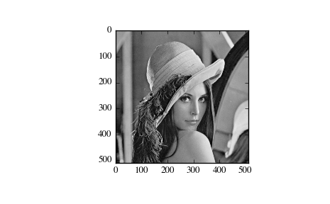

scipy.misc.lena¶
- scipy.misc.lena()[source]¶
Get classic image processing example image, Lena, at 8-bit grayscale bit-depth, 512 x 512 size.
Parameters: None
Returns: lena : ndarray
Lena image
Notes
Though safe for work in most places, this sexualized image is drawn from Playboy and makes some viewers uncomfortable. It has been very widely used as an example in image processing and is therefore made available for compatibility. For new code that needs an example image we recommend face or ascent.
Examples
>>> import scipy.misc >>> lena = scipy.misc.lena() >>> lena.shape (512, 512) >>> lena.max() 245 >>> lena.dtype dtype('int32')
>>> import matplotlib.pyplot as plt >>> plt.gray() >>> plt.imshow(lena) >>> plt.show()
